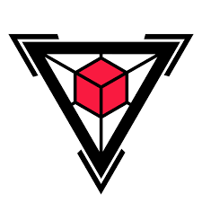

accueil
Science informatique
Génie informatique
Technologie de l’information
Systèmes d’information
Auteur du site
Auteur du site
Ce site web a été créé par Noah Desjardins-Cote. Il est actuellement au collège Lionel-Groulx en technique de l’informatique.